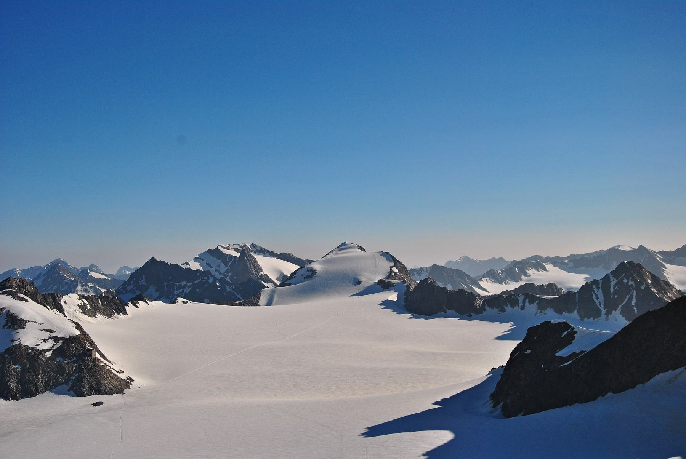
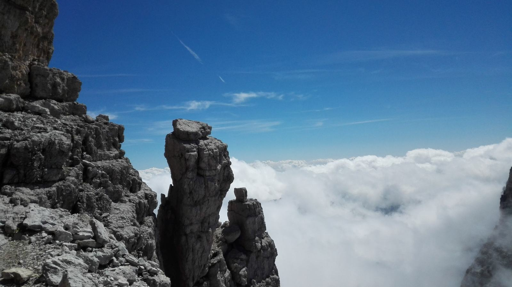

Ötztal Alps · Tirol · 3,494 m

Brenta Dolomites · Trentino · ferrata
ICE&IRON
Three days roped up on the biggest glaciers in Austria. Three days clipped into the iron ladders of the Brenta. Finish with pasta by Lake Garda.
Scroll

Three days roped up on the biggest glaciers in Austria. Three days clipped into the iron ladders of the Brenta. Finish with pasta by Lake Garda.
The plan, in one breath
From Munich to the glacier castle of the Ötztal, over a 3,494 m summit, down to Vent, across to the Dolomites, along the most famous ledges in the Alps and out via Lake Garda.
Tap a day to zoom. Solid lines are on foot, dashed lines are taxi, train or cable car. Lines join real hut and summit coordinates, so they show the shape of each day, not the exact trail.
Bars show each day's high point. The line shows where you sleep. Nights 2 and 3 are the big altitude jump: from Munich at 520 m to the highest DAV hut at 3,277 m within 48 hours.
Distances, times and metres are my estimates from published hut-to-hut data. Sigi didn't give any, and he'll set the real pace on the day. Sources are listed at the bottom.
How hard each day is · orange = crux day

Half board every night, in mountain huts and hotels. Drag sideways. In huts expect a shared room, big dinners and a 22:00 lights out.
What it actually looks like up there. Tap a photo to see it full screen.
Sigi's price, what it covers, when to go, and the Lake Garda option.
Sigi's quote
Not mentioned in the quote, so budget separately: getting to Munich, lunches and drinks, hut showers (often coin-operated), cable car tickets (check), a possible extra night in Madonna on Day 7, tips and travel insurance with mountain rescue cover.
What's included
When to go
Next step from Sigi: tell him your start date so he can book, starting with the Brenta huts.
Pack yourself
Stiff hiking boots that take crampons (B1/B2), a hut sleeping-bag liner, layers for −5 °C at dawn on the glacier, sun cream and glacier glasses, ferrata gloves, earplugs, and cash for the huts.

Option B · Days 7–8
After the Bocchette, take a taxi from Madonna to Arco (about 1 h 15). Stay in a hotel, eat out, and get some southern Italian air. On Day 8 climb the short Ferrata Colodri, which ends in the centre of Arco. In the afternoon take a taxi to Rovereto and a direct train to Munich.